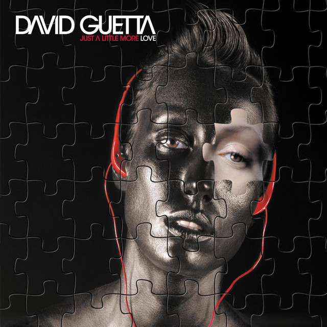
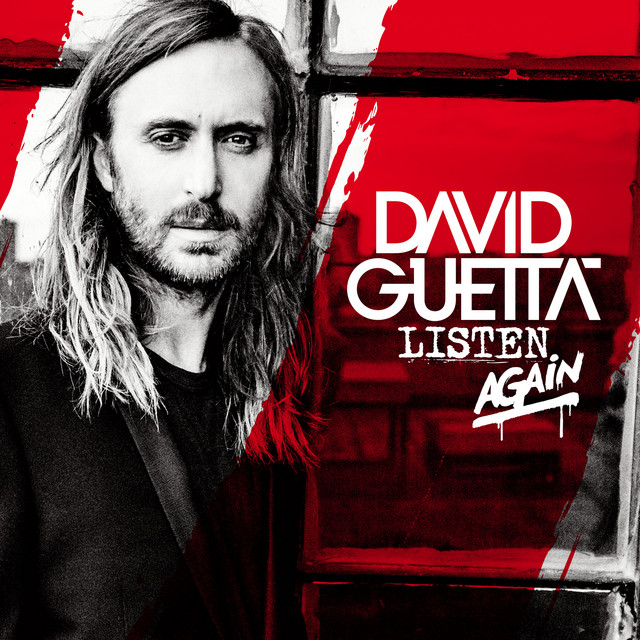

David Guetta
David Guetta es un DJ y productor de música electrónica. Durante toda su carrera ha sido reconocido por su innovador enfoque en la música dance y ha colaborado con numerosos artistas de renombre.
Su estilo musical combina elementos de house, electro y pop, lo que le ha permitido alcanzar una amplia audiencia en todo el mundo.
David Guetta ha lanzado numerosos álbumes aclamados por la crítica y ha recibido varios premios Grammy, consolidando su estatus como uno de los mejores DJs del mundo.
Su influencia en la música electrónica es innegable y ha dejado una huella duradera en la industria musical.
Con su talento y dedicación, David Guetta sigue siendo una figura destacada en el mundo de la música electrónica.
En 2023, David Guetta fue galardonado con el premio a mejor DJ del mundo por la revista DJ Mag.
Discografía
Just a little more love (2001)
Nothing but the Beat (Ultimate Edition) (2011)

Listen (2014)

Listen Again (2015)
7 (2018)
Just a little more love
Just a little more love es el primer álbum lanzado en 2001 por el propio David Guetta, en el podemos ver como sus primeros temas se volvieron reconocibles poco a poco.
Canciones Destacadas
Just a little more love
Love Don't Let Me Go
Can't U Feel the Change
Nothing but the beat
Nothing but the beat es el tercer álbum lanzado en 2011 por David Guetta, en el podemos ver como su estilo musical se ha vuelto más comercial y pegajoso, lo que le ha permitido alcanzar una amplia audiencia en todo el mundo.

Este álbum es uno de mis favoritos porque las canciones que tiene son recuerdos los cuales me hicieron sentir bien, cuando iba a la academia de baile urbano en el año 2014. Pero las canciones que más destacan son:
Canciones Destacadas
Where Them Girls At (.feat Flo Rida)
Titanium (.feat Sia)
Just one last Time (.ft Taped Rai)
She Wolf (Falling to Pieces)[.feat Sia]
Listen
Listen es el sexto álbum de estudio de David Guetta, lanzado en 2014. Este álbum presenta una mezcla de géneros, incluyendo EDM, house y pop, y cuenta con colaboraciones de varios artistas destacados.
Este álbum también es uno de mis favoritos de todos los temas por la gran variedad de estilos y colaboraciones famosos.
Algunos de los temas más destacados de este álbum incluyen:
Canciones Destacadas
Shot me Down
Bad (.ft Vassy)
S.T.O.P
Hey Mama (.ft Nicki Minaj & Bebe Rexha)
La canción con más reproducciones en Spotify es Hey Mama, cuenta con más de 900 millones de reproducciones, pero en YouTube cuenta con más de 1.2 mil millones de reproducciones.
Listen Again
En esta sección, puedes volver a escuchar los temas del álbum "Listen" de David Guetta y disfrutar de su música una vez más.
El álbum Listen Again es lo mismo pero con un toque diferente, con más remixes. Según mi punto de vista la portada de este álbum es más bonita que la del original.
Una característica de este álbum es que al final tiene un mix entero de 56 minutos haciendo un mix de todas las canciones que tiene.
Algunos de los temas más destacados de este álbum son:
Canciones destacadas
Hey Mama (.ft Nicky Minaj, Bebe Rexha & Afrojack)
BAD (.ft Vassy) -Listening Continuous Mix
Shot me Down (Listening Continuous mix)
7
El álbum "7" de David Guetta presenta una fusión de géneros y colaboraciones con varios artistas destacados. Lanzado en 2018, este álbum incluye éxitos como "Flames" y "Don't Leave Me Alone".
El álbum "7" de David Guetta es una muestra de su evolución musical y su capacidad para mantenerse relevante en la industria de la música electrónica.
Algunos de los temas más destacados de este álbum son:
Canciones Destacadas
Flames (.ft Sia)
Don't Leave Me Alone (.ft Anne-Marie)
Say My Name (.ft Bebe Rexha & J Balvin)
Like I Do (.ft Christina Aguilera & Black Eyed Peas)
Singles y colaboraciones
David Guetta ha lanzado numerosos singles y colaboraciones a lo largo de su carrera, algunos de los cuales se han convertido en éxitos mundiales. Aquí hay una lista de algunos de sus singles más destacados:
Singles destacados
I´m Good (.ft Bebe Rexha)

I don´t Wanna Wait (.ft One Republic)

Don´t You Worry (.ft Black Eyed Peas & Shakira)